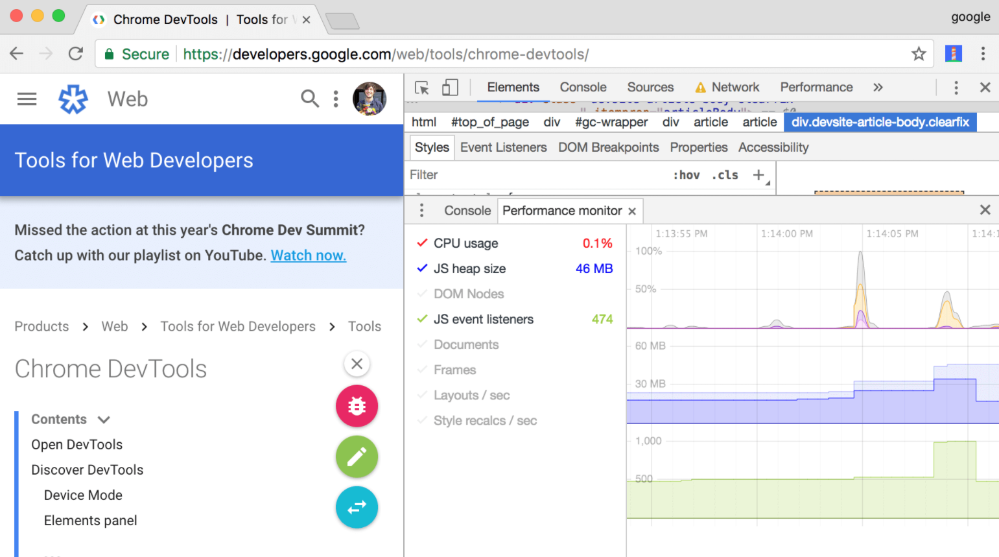

- web services
- browser extensions
- devtools
- scripts / tools
- WebPagetest
- Pingdom
- GTmetrix
- sonarwhal
- KeyCDN
- PageSpeed Insights
- Yellow Lab Tools
- Sucuri
- Uptrends
- Varvy Pagespeed
- …

https://developers.google.com/web/updates/2017/11/devtools-release-notes#perf-monitor
- gmetais/YellowLabTools
- marcelduran/webpagetest-api
- macbre/phantomas
- speedracer/speedracer
- okor/justice
- sonarwhal/sonarwhal
- GoogleChrome/lighthouse
- addyosmani/psi
- sitespeedio/sitespeed.io
{
"browsertime.pageSummary": [{
"metric": "statistics.timings.firstPaint.median",
"max": 1000
}, {
"metric": "statistics.visualMetrics.FirstVisualChange.median",
"max": 1000
}],
"coach.pageSummary": [{
"metric": "advice.performance.score",
"min": 75
}, {
"metric": "advice.info.domElements",
"max": 200
}, {
"metric": "advice.info.domDepth.max",
"max": 10
}, {
"metric": "advice.info.iframes",
"max": 0
}, {
"metric": "advice.info.pageCookies.max",
"max": 5
}],
"pagexray.pageSummary": [{
"metric": "transferSize",
"max": 100000
}, {
"metric": "requests",
"max": 20
}, {
"metric": "missingCompression",
"max": 0
}, {
"metric": "contentTypes.css.requests",
"max": 1
}, {
"metric": "contentTypes.image.transferSize",
"max": 100000
},{
"metric": "documentRedirects",
"max":0
}]
}
http://designingforperformance.com
http://designingforperformance.com/weighing-aesthetics-and-performance
http://www.perfplanet.com
https://github.com/davidsonfellipe/awesome-wpo
- FormidableLabs/webpack-dashboard
- FormidableLabs/electron-webpack-dashboard
- zouhir/jarvis
- webpackmonitor/webpackmonitor
https://github.com/FormidableLabs/webpack-dashboard
https://github.com/FormidableLabs/electron-webpack-dashboard
https://github.com/zouhir/jarvis

https://github.com/webpackmonitor/webpackmonitor

https://github.com/webpackmonitor/webpackmonitor

https://github.com/webpackmonitor/webpackmonitor
- Section 508
- WCAG 2.0 A
- WCAG 2.0 AA (recommended)
- WCAG 2.0 AAA
- Swiper
- flatpickr
- ? …
- addyosmani/a11y
- pa11y/pa11y
- pa11y/pa11y-ci
- open-indy/Koa11y
https://github.com/open-indy/Koa11y
https://github.com/open-indy/Koa11y